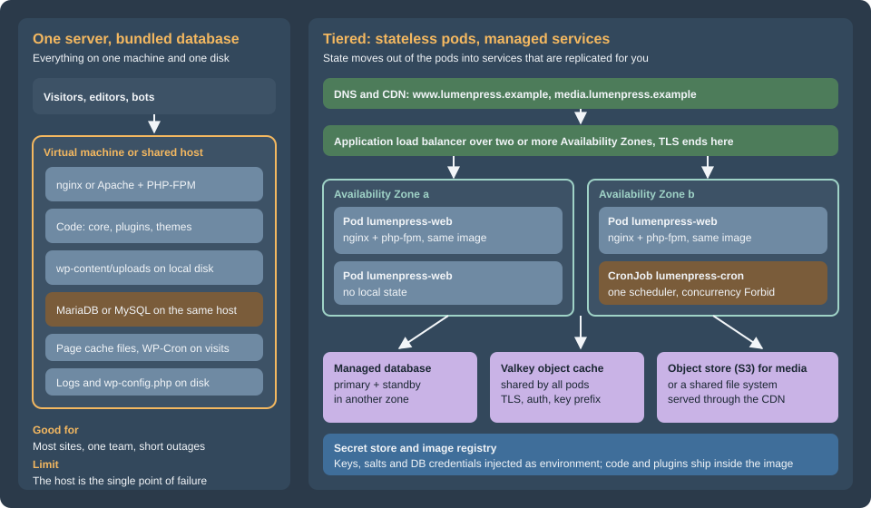

Cloud Reference Architecture
|
This content was generated with the assistance of AI and should be verified against the official documentation before being relied on in production. |
This page was written against WordPress 7.1.3 (released 2026-10-06; 7.1.4, the security release of 2026-10-28, is the version to run), PHP 8.4, WP-CLI 2.12.0, MariaDB 11.8 and Kubernetes 1.36 and 1.37 (both available on Amazon EKS), and checked on 2026-10-29. It is the first page of the "Cloud Deployment at Scale" part of this section and the map for the other eight. It names no prices: sizes are starting points to measure on your own traffic.
Scaling and High Availability explains what a WordPress cluster
needs (shared uploads, identical keys and salts, one cron runner, proxy-aware HTTPS) and proves it on a two-node
staging cluster built with Docker. This page and the next eight take the same ideas to a public cloud: which managed
service replaces each part of the single server, how the pieces connect, how big to make them, and where the
details are. The running example is Lumen Press, the fictitious publisher used throughout this section, moving its production site
www.lumenpress.example from one virtual machine to an Amazon EKS cluster in eu-west-1. Shared cloud fundamentals
are linked, not repeated: VPC Networking, EKS Clusters,
Amazon RDS and the rest of the AWS section.
Two architectures

The single server is the architecture that most WordPress sites have and most should keep. One machine runs the web server, PHP, the database, the cron trigger and the files. Everything is local, so everything is fast and simple: there is one place to back up, one log to read, and no network between PHP and MySQL. Its limit is the machine. A failed disk, a bad kernel update or a noisy neighbour takes the whole site down, and the recovery is a restore from a backup that is only as fresh as the last copy (see Backups and Disaster Recovery). Vertical scaling postpones the problem but never removes it.
The tiered architecture separates compute from state. The web tier is a set of identical, disposable pods built from one container image. They hold no data worth keeping, so Kubernetes can add, remove, replace and spread them over zones at any time. Everything that must survive moves to a service that is replicated by its provider: the database, the object cache, the media store, the secrets. A scheduler runs WordPress cron once. This is the stateless web tier design of the "twelve-factor" style, applied to WordPress, which was written for a single server and has to be told, one setting at a time, to stop trusting the local disk.
What the tiered design buys, and what it costs:
| Single server | Tiered on Kubernetes | |
|---|---|---|
Availability |
One host; recovery means restore or rebuild |
Pods in several zones, a managed database with a standby, a load balancer that removes failed pods |
Capacity |
The largest machine you will buy |
Pods added by an autoscaler; the database remains one writer |
Deployments |
Edit files or run an update on the server |
A new image, a rolling update and a rollback, with schema changes in a Job before the rollout |
Plugin and theme changes |
From the dashboard |
Through the image and a pipeline; the dashboard is read-only |
Moving parts |
One |
A cluster, a registry, a database, a cache, an object store, a CDN, a secret store, a pipeline |
What can go wrong |
The host |
Misconfiguration between the parts, and the cost of operating them |
Skills |
A systems administrator |
Kubernetes, a cloud, infrastructure as code and a delivery pipeline |
The honest summary is that the tiered design trades simplicity for availability and capacity. Section "When one server is still right" at the end says when not to make that trade.
The request path
Following one request for a page that is not in the CDN:
-
The visitor resolves
www.lumenpress.exampleto CloudFront. The CDN serves cached pages and static files. Requests for/wp-content/uploads/*go to the S3 bucket through the same distribution (see Media: S3 Offload, EFS and CloudFront). Everything else goes to the origin. -
The load balancer terminates TLS at the origin, picks a healthy pod and adds
X-Forwarded-ProtoandX-Forwarded-For.wp-config.phpmust trust that header, or WordPress loops on redirects; the setting is in Scaling and High Availability and the pod configuration in Deploying on EKS with Helm. -
nginx in the pod serves static files itself and hands PHP requests to
php-fpmover FastCGI on the pod’s loopback address. Two containers in one pod keeps the pair together and lets them scale as a unit. -
PHP runs WordPress. It asks the object cache (Valkey) first, which removes most database reads, and connects to the database only when it must. See Object Cache, Sessions and Cron in a Cluster.
-
The database is a managed primary with a synchronous standby in another zone; the connection uses TLS. See Managed Database: RDS and Aurora.
-
The response goes back, and the CDN stores it if the cache rules allow. Pages for logged-in users, previews, the admin and the login page are not stored.
The pod learns its configuration from environment variables that the cluster fills from the secret store when it starts. There are no files to edit on a pod; the filesystem is read-only except for a few scratch directories.
Where each piece of WordPress state goes
On one server, WordPress keeps state in many places and nothing says so. Moving to a cluster is mostly the work of finding every one and deciding where it goes. This table is the checklist for the whole section.
| State | On one server | In the tiered design | Page |
|---|---|---|---|
Code: core, plugins, themes |
|
Inside the container image, built in the pipeline. |
|
Configuration: |
A file on the server |
The same file in the image, reading everything variable from environment variables; the eight keys and salts come from a secret and are identical on every pod |
|
Database content |
MariaDB or MySQL on the same host |
A managed database with a standby: RDS or Aurora, reached over TLS by a dedicated user |
|
Media uploads |
|
Object storage with an offload plugin and a CDN, or a shared file system mounted on every pod |
|
Sessions and logins |
Signed cookies and the |
Unchanged: any pod can check a cookie when the keys and salts are identical. A plugin that uses |
|
Object cache and transients |
A per-process cache, or a local Redis |
A shared Valkey or Redis through the object-cache drop-in, with a key prefix per site |
|
Page cache |
Plugin cache files on disk, or a reverse proxy |
At the edge: the CDN, honoring cookies that mean a logged-in user. A per-pod file cache is not shared and is not used |
|
Search |
MySQL |
The same, from the managed database, until it is too slow; then a search service (OpenSearch through a plugin) as a separate tier |
|
Scheduled events (cron) |
WP-Cron on page views, or a system cron entry |
|
|
Schema upgrades |
|
A Job that runs before the rollout, so that the new pods never meet an old schema |
|
Outgoing email |
The server’s mail transport |
An email service (SES or another) through SMTP or its API; pods do not run a mail server |
|
Logs |
|
Standard output and error of the containers, collected by the cluster to the log service |
|
Backups |
Scripts on the server |
Database snapshots and point-in-time recovery, bucket versioning and replication, the image registry and the infrastructure code |
|
TLS certificates |
Let’s Encrypt or a purchased certificate on the server |
Certificates managed by the cloud (ACM) on the load balancer and the CDN |
Two rows deserve a sentence more. Sessions is the one that surprises people from other stacks: WordPress core does not
use PHP sessions, so a WordPress cluster needs no sticky routing and no session store, which removes a tier that PHP
shops usually have. The exception is a plugin that opens $_SESSION, which also trips the Site Health "No PHP sessions"
test; treat it as a defect to replace. Code is the row that changes how the team works: in the tiered design nobody
installs a plugin from the dashboard. The plugin is added to the repository, built into an image, tested on
staging and rolled out. That is a loss of convenience for editors and a gain in repeatability, rollback and security.
The tiers on three clouds
The architecture does not depend on one provider. Each tier has a managed equivalent on the three large clouds. The walkthroughs in the next pages use AWS; Google Cloud, Azure and Alternatives gives the differing commands for the others.
| Tier | AWS | Google Cloud | Azure |
|---|---|---|---|
Managed Kubernetes |
Amazon EKS (Auto Mode, or managed node groups with Karpenter) |
GKE (Autopilot or Standard) |
|
Container registry |
|||
Load balancer and edge routing |
Application Load Balancer through the AWS Load Balancer Controller |
||
CDN |
|||
Web application firewall |
AWS WAF |
Cloud Armor |
Web Application Firewall on Front Door or Application Gateway |
DNS and certificates |
Azure DNS and managed certificates |
||
Managed database (MySQL or MariaDB) |
Azure Database for MySQL Flexible Server. Azure Database for MariaDB was retired on 2025-09-19 |
||
Object cache |
|||
Object storage for media |
|||
Shared file system (if used) |
Azure Files, see Storage Accounts |
||
Secrets |
|||
Identity for pods |
EKS Pod Identity or IAM roles for service accounts |
Workload Identity Federation for GKE |
Microsoft Entra Workload ID |
Logs and metrics |
|||
Infrastructure as code |
The Kubernetes layer has its own section, Kubernetes; the cloud pages above cover the managed services. The WordPress-specific parts that no cloud page covers are the other eight pages here.
Sizing tiers for Lumen Press
Three sizes cover the life of a site. The numbers are starting points. A PHP worker for a typical plugin set uses
roughly 40 to 80 MiB; take the real figure from ps under load, then size the pod from pm.max_children, and the pod
count from the database’s connection budget (see
Managed Database: RDS and Aurora).
| Staging and launch | Production | Prize night (a traffic spike) | |
|---|---|---|---|
Web pods |
2, spread over two zones; 0.5 vCPU and 1 GiB each; |
3 to 10 with an autoscaler; 1 vCPU and 2 GiB each; |
Up to 30 in a pre-scaled window; the same pod size |
Database |
RDS for MariaDB 11.8, a small burstable class, Single-AZ for staging, Multi-AZ for production |
Multi-AZ, a general-purpose class such as |
The same primary, or Aurora with readers, plus RDS Proxy if the connection budget is tight |
Object cache |
One small Valkey node |
A replication group (primary and one replica) with TLS and auth |
A larger node type; keys expire normally |
Media |
S3 bucket and CloudFront |
The same |
The same; check CloudFront cache hit ratio first |
Nodes |
Two small nodes, or Auto Mode |
Auto Mode, or managed nodes with Karpenter over three zones |
Nodes follow the pods; set limits on the node pool |
Cron |
One CronJob |
One CronJob, one replica of the scheduler |
The same; long jobs move to their own CronJob |
When to move up |
The site goes live, or downtime costs money |
The primary’s CPU or connections near limits, or p95 TTFB degrades |
Before the event: rehearse with a load test (see the releases page) |
The first lever for a spike is not more pods. A CDN that serves anonymous pages and media absorbs most of the traffic,
and a persistent object cache removes most database reads; add pods only for what is left: logged-in editors, search,
the REST API, admin-ajax.php and, on a shop, the cart and checkout. Performance and Caching covers
measuring it, and Releases, Upgrades and Autoscaling on Kubernetes
the load test and the autoscaler.
Measure the single server before choosing a tier. The script below, run on the existing server, collects the figures that matter: versions, database size, media size and file count, the code that has to go into the image, the weight of autoloaded options and the busiest minutes of the access log.
#!/usr/bin/env bash
# Collects the numbers that decide a sizing tier. Run on the single server, as the site's user, from the WordPress root.
set -euo pipefail
echo "== Versions"
wp core version
wp eval 'echo PHP_VERSION, PHP_EOL;'
wp db query 'SELECT VERSION();' --skip-column-names
echo "== Database size (largest tables first)"
wp db size --tables --size_format=mb --format=table | head -n 15
echo "== Media"
du -sh wp-content/uploads
find wp-content/uploads -type f | wc -l
echo "== Code that must go into the image"
wp plugin list --fields=name,status,version --format=table
wp theme list --fields=name,status,version --format=table
echo "== Autoloaded options (large values slow every request)"
wp db query "SELECT ROUND(SUM(LENGTH(option_value)) / 1024) AS autoload_kb FROM $(wp db prefix)options WHERE autoload IN ('yes', 'on', 'auto-on', 'auto');" --skip-column-names
echo "== Scheduled events"
wp cron event list --fields=hook,next_run_relative,recurrence --format=table | head -n 20
echo "== Peak load (requests in the busiest minutes of the web server log)"
awk '{print substr($4, 2, 17)}' /var/log/nginx/access.log | sort | uniq -c | sort -rn | head -n 3Source: WP-CLI Commands: wp db size
Read the output before the meeting about cost. A 40 GiB media library points at object storage first; a 2 GiB database with
a 10 MiB autoload total points at a cache and a small instance; a long list of cron hooks points at the scheduler.
Migrating from a Single Server uses the same inventory.
The names used across these pages
The nine pages use one set of names, so a snippet in one page connects to another.
| Item | Name |
|---|---|
Region and account |
|
Site and media hosts |
|
EKS clusters |
|
Helm release and chart |
release |
Image |
ECR repository |
Workloads |
Deployment |
Database |
RDS instance |
Secrets |
|
Cache |
ElastiCache for Valkey replication group |
Media |
S3 bucket |
The tag wordpress:7.1.4-php8.4-fpm existed on Docker Hub on the check date. Confirm it with docker pull when you build.
The end of the Bitnami images
Many older tutorials start a WordPress cluster from the Bitnami images or the Bitnami Helm chart, or a Lightsail blueprint, because they came with sensible defaults. That path changed:
-
In August 2025 Broadcom moved the public Bitnami container images to a "Bitnami Legacy" repository that receives no updates, and moved the maintained images to a paid catalogue; new OCI Helm charts stopped being published on Docker Hub.
-
Broadcom’s announcement of 2026-05-20 says that on 2026-06-10 the Bitnami containers on Amazon ECR, the Helm charts, the AMIs on AWS Marketplace and the Lightsail blueprints are removed from AWS. Existing EC2 and Lightsail instances keep running but get no updates after 2026-05-20.
-
The source repositories (
bitnami/charts,bitnami/containers) are still public, but published images and charts are no longer a safe default for production: nothing guarantees updates.
The consequence for this section: build your own image from the official wordpress image (the Dockerfile is in
Deploying on EKS with Helm), use managed services for the database
and cache instead of in-cluster charts, and treat a Bitnami or Lightsail WordPress instance as a system to migrate off, not one to
patch. The migration is in Migrating from a Single Server.
When one server, or a managed WordPress host, is still right
The tiered architecture is the answer to specific requirements, not a goal. Stay with a single server, or buy a managed WordPress service, when:
-
Traffic is modest and mostly anonymous. A CDN or page cache in front of one well-tuned server serves very large audiences. The Advanced Administration Handbook orders the steps: caching and tuning first, a database on its own server next, offloaded media after that, and several web servers last.
-
A few minutes of downtime is acceptable and the backup and restore are tested. A one-hour recovery objective can be met with snapshots and a rebuild script, with none of the cluster.
-
No team operates Kubernetes. A cluster that nobody understands is less available than a virtual machine that somebody does. Operating it (upgrades every year, node and add-on patching, cost control, on-call) is the real price.
-
The plugins need a writable code directory. A site that depends on installing plugins from the dashboard, or on plugins that write PHP files, fights the immutable-image model.
-
A managed WordPress host fits. A host that runs WordPress, its updates, caching, backups and a CDN removes most of the operations while keeping the site portable. Evaluate it as in Requirements and Hosting; check how it handles staging, WP-CLI access, cron, custom plugins and the exit (an export you can restore elsewhere).
Between the extremes there are middle paths that do not need Kubernetes: a single virtual machine with a managed database and
object storage (the first two steps of the tiered design), an EC2 Auto Scaling group behind a load balancer, or containers on ECS
with Fargate. Google Cloud, Azure and Alternatives compares them.
A managed database is often the best single step: it removes the failure that is hardest to recover from and changes only one
constant, DB_HOST.
Reading path
-
This page, then Managed Database: RDS and Aurora and Media: S3 Offload, EFS and CloudFront: the two stores.
-
Object Cache, Sessions and Cron in a Cluster: the rest of the state.
-
EKS Infrastructure with OpenTofu and Deploying on EKS with Helm: the build and the first deployment.
-
Releases, Upgrades and Autoscaling on Kubernetes: running it.
-
Migrating from a Single Server to move an existing site, and Google Cloud, Azure and Alternatives for the other choices.
Pitfalls
-
Moving the database and nothing else. A managed database fixes the data tier but not the web tier. Two web servers still need shared media, identical keys and salts, one cron runner and a shared cache.
-
Treating the cluster as a bigger server. Dashboard installs, a writable code directory, local uploads and file-based page caches all break when the pod is replaced.
-
A database that cannot keep up with the pod count. More pods mean more connections; the budget is on Managed Database: RDS and Aurora.
-
Forgetting the egress. Pods in private subnets reach the WordPress.org API, plugin license servers and email services through a NAT gateway or endpoints; a blocked call is a hung request, not an error.
WP_HTTP_BLOCK_EXTERNALand its allow-list are in wp-config.php Reference. -
Two sources of truth for one setting. A value in a Helm chart, a secret and the options table at once will disagree. Constants in
wp-config.phpwin over the options table; choose one place. -
Copying a diagram without the cost model. A tier that is not needed is still operated, patched and paid for.